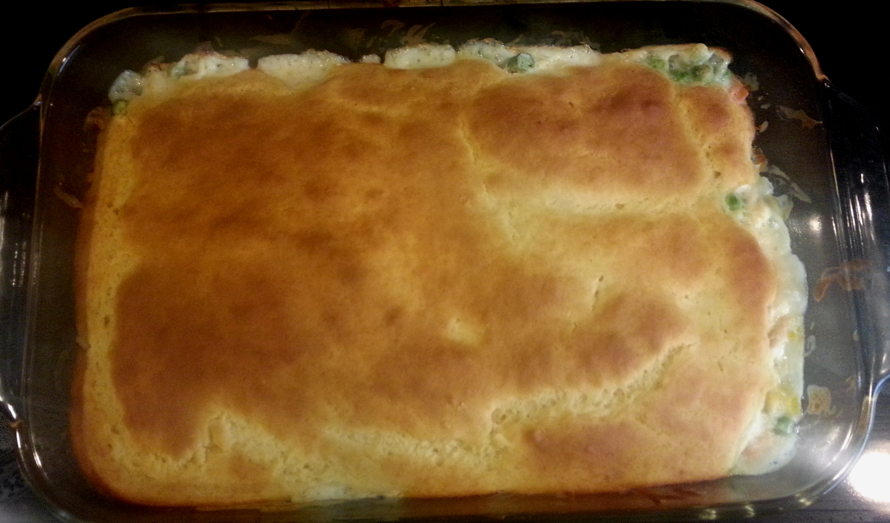
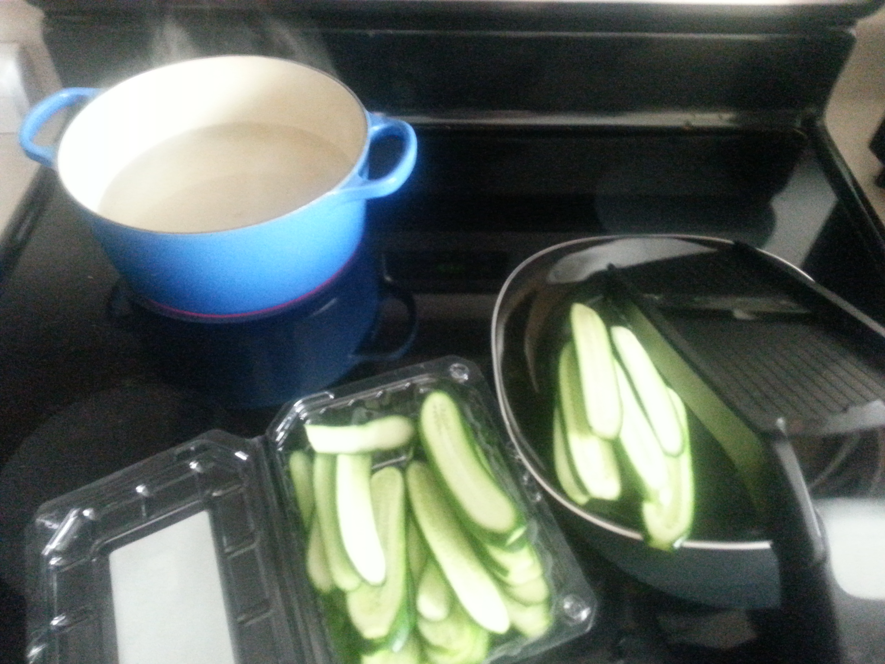
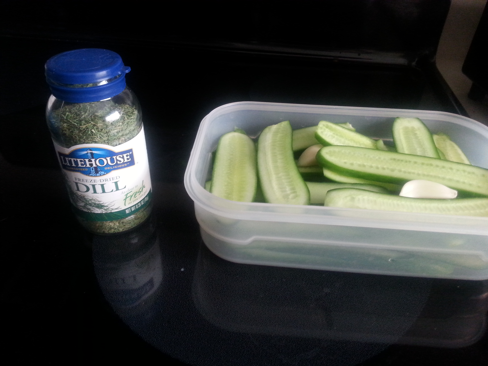
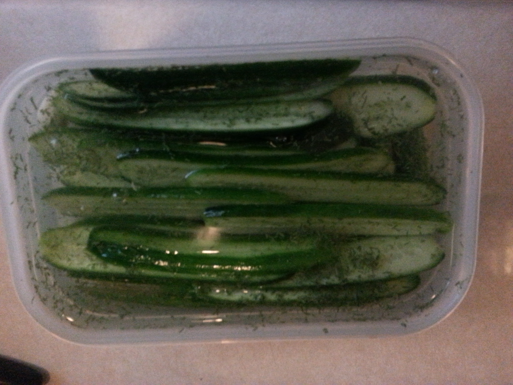

Cooking & Baking
I love to bake delicious goodies, and enjoy knowing how to make a variety of food. I have learned some tricks of the trade and would love to share that knowledge, along with the things I learn in the future! Making a new dish for the first time is an adventure that begs to be shared!
Pesto
Chicken Pot Pie
Adapted from Bisquick® box:
I've made this recipe with my mother several times and a couple of times on my own.
I purchased a day old roasted chicken from the grocery store for half price ($3), and so to use it up I'm making this recipe.

Ingredients:
2/3 cups frozen mixed vegetables
1 cup cut-up cooked chicken (OR turkey)
1 can (10 3/4 ounces) condensed cream of chicken soup (OR make your own White Sauce)
------
1 cup Original Bisquick® mix (OR generic biscuit mix)
1/2 cup milk
1 egg
Heat oven to 400°F. Mix vegetables, chicken and soup in ungreased glass pie plate, 9x1 1/4 inches.
Stir together Bisquick®, milk and egg with fork until blended. Pour into pie plate over other ingredients.
Bake 30 minutes or until golden brown.
When I went to make this recipe today, I found out that I was actually out of Bisquick®. I substituted Hungry Jack Pancake mix and it turned out rather well.
Substitutions are nothing to be afraid of!
White Sauce
This is a very generic and basic recipe.
I use this sauce as a substitute in certain instances when I need a cream base, but am too cheap or lazy to go out and purchase it.
Ingredients:
2 Tablespoons Butter
2 Tablespoons all-purpose flour
1 cup milk
In a small saucepan over medium heat, melt butter.
Add flour and stir until the butter and flour are well combined.
Pour in milk, stirring constantly as it thickens. Add more milk depending on desired consistency.
*On a side note the spatula in this image is by Betty Crocker made of silicone, purchased at The Dollar Tree. I have 6 of these because they are the best spatulas I've ever used!
Dill Pickles
I modified this recipe from Allrecipes.com
Ingredients:
3 cups water
1 cup white vinegar
1 Tablespoon Sugar
1 Tablespoon Sea Salt
2 Tablespoons Freeze Dried Dill
2 Cloves Garlic
4 cups Cucumber
1. Stir water, vinegar, sugar, and sea salt together in a saucepan over high heat.
Bring to a boil; remove from heat and cool completely.
2. Using a mandolin, (I have this one, inexpensive, sharp, and well made!)
slice pickles length wise to create slices, or you can slice to make chips.
If you don't have a mandolin you can use a knife to cut the cucumbers into spears, but note that spears will take longer to soak in the flavor.

3. Combine cucumber spears, garlic cloves, and dill in a large glass or plastic container.
Pour cooled vinegar mixture over cucumber mixture.

4. Seal container with lid and refrigerate.
The original recipe claims that the pickles should be ready as soon as 3 days later, but I found they didn't really change in taste from cucumber to pickle until about 3 weeks.

Apple Crisp
I have made this Apple Crisp about 3 times now...
I use Red Delicious Apples for but I'm sure any kind would work.
Ingredients:
2 apples thinly sliced, peeled and cored
1/2 cup water
1 teaspoon cinnamon
Topping:
1/2 cup sugar
1/2 cup flour
1/4 cup butter (room temperature)
Preheat oven to 350° F
Place prepared apples in dish. Sprinkle with cinnamon then pour water over apples.
In a separate bowl combine the sugar and butter until light and fluffy then add flour till the mixture crumbles.
Crumble the sugar mixture over the apples and place in oven for 40 minutes or until the sugar mixture is lightly browned (only after the 40 minutes to ensure the apples are tender)